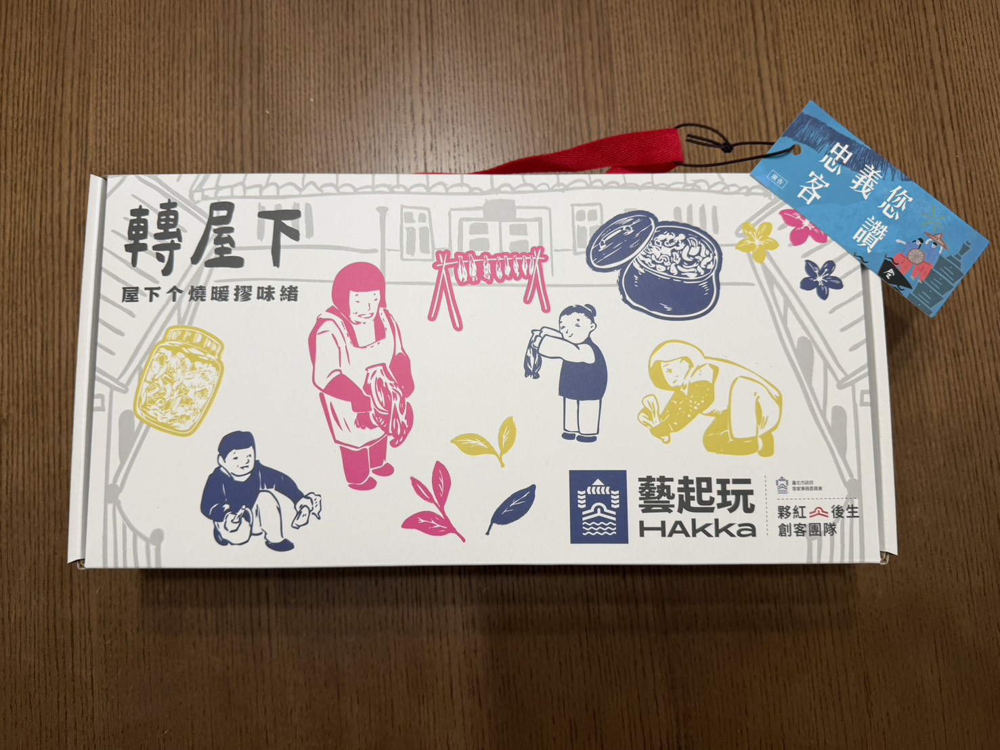

日頭，是客家文化的靈魂
象徵家的方向、團聚的溫馨，以及將滋味保存下來的智慧
將用過的茶葉渣做成的紙，是客家人善用自然資源的生活態度
把回家的日常，用杯盤碟紙盈滿家的溫暖
這不只是器物，更是一場以光串起的回家日常
整體視覺包裝以「轉屋下」的家庭團圓氛圍為主軸，傳達回家、相聚、共享的溫暖感受。禮盒不僅是物件，更是一份「歸屬感」與「生活故事」的承載。
設計上，以客家生活場景——採摘、醃菜、務農，呈現勞動與團聚的日常。搭配自然意象的野薑花、茶葉，象徵客家堅韌、清雅與精神寄託。
視覺風格以溫潤的插畫或線描，呈現水井、農田、家庭團聚的畫面。透過炊煙、野薑花、茶葉紋理，營造詩意且帶生活感的層次。
視覺設計組工作側拍紀錄
無論再忙，轉屋下總有一桌飯與一盞茶等著家人。
透過「務農—休憩—團聚」的循環，詮釋幸福的來源。
客家文化中的互助、勤勞與簡樸，讓禮盒不只是商品，而是一份文化的分享。
設計製作: 夥紅創客團隊 | 視覺設計製作: 黃泰承、解雅雯